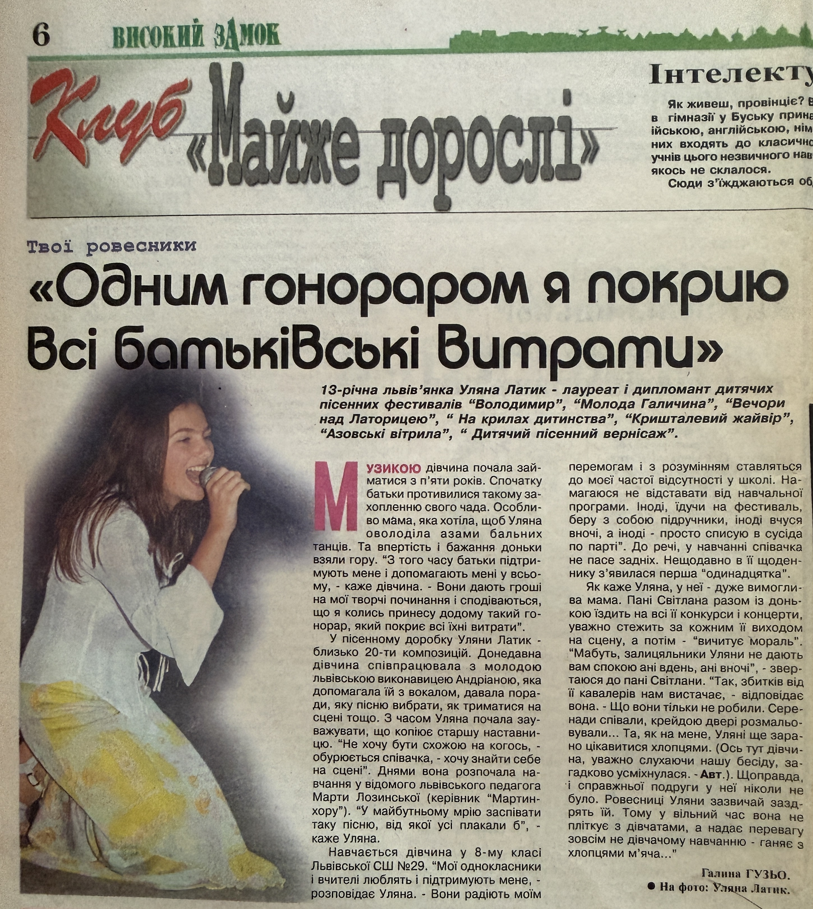

| Title | Vysokyi Zamok Interview |
| Original Article Title | Одним гонораром я покрию всі батьківські витрати |
| Material Type | Newspaper Article |
| Featured Artist | Uliana Latyk |
| Publication | Vysokyi Zamok (Високий Замок) |
| Issue | Not specified |
| Publication Date | 3 October 2000 |
| Page | 6 |
| Language | Ukrainian |
On 3 October 2000, the Ukrainian newspaper Vysokyi Zamok (Високий Замок) published an interview with Uliana Latyk titled «Одним гонораром я покрию всі батьківські витрати» (“With One Performance Fee I Will Cover All My Parents’ Expenses”).
The interview documents a stage in Uliana Latyk’s early artistic career. The supplied archival description states that she was thirteen and actively participating in vocal competitions and festival performances throughout Ukraine.
The article discusses her musical education, participation in artistic events, first earnings from performances, family support, creative aspirations, and future plans.
This archive entry records the publication’s identifying details and preserves the scanned newspaper page as a historical press item documenting Uliana Latyk’s early artistic activity before she adopted the stage name Ana Danch.
| Archive Category | Press Publication |
| Name on Publication | Uliana Latyk |
| Current Stage Name | Ana Danch |
| Archive Reference | Newspaper Interview (2000) |
| Country | Ukraine |
| Author | Галина Гузьо |
| Publication | Vysokyi Zamok (Високий Замок) |
| Publication | Vysokyi Zamok (Високий Замок) |
| Issue | Not specified |
| Date | 3 October 2000 |
| Page | 6 |
| Original Article Title | Одним гонораром я покрию всі батьківські витрати |
| Source Language | Ukrainian |
The article is preserved in the Ana Danch Archive as a historical press item documenting Uliana Latyk’s artistic activity before she adopted the stage name Ana Danch.
The publication date and page number are recorded in the supplied archival information. The issue number is not specified, and no issue number has been inferred.